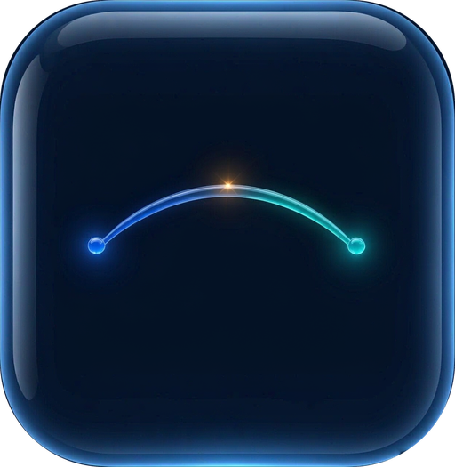
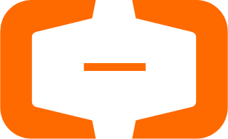
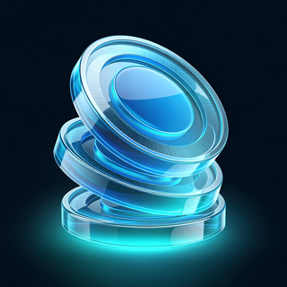
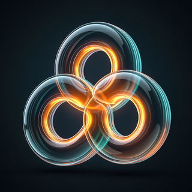
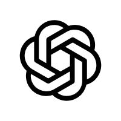
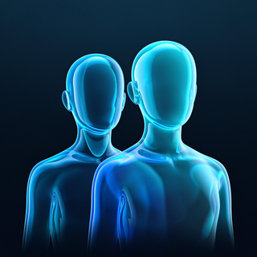
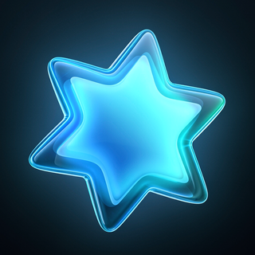
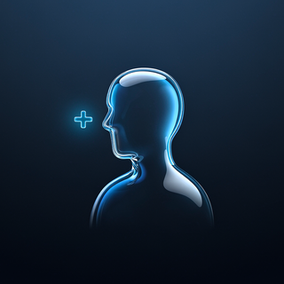
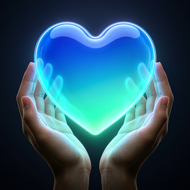

AI Bridge
Helping international students
in China use AI well.

AI Bridge Qwen
Qwen

Alibaba CloudStudents use AI. But not well.
Three reasons.
No skill
Nobody shows how.

No easy start
Tools cost money.

Small circles
We stay in our own group.
Every AI company wants students.
Gemini for students

OpenAIChatGPT Edu
Claude for Education
 GitHub
GitHubStudent Developer Pack
Qwen today: free tokens for developers. But I found no student academy for it. That's the gap.
Qwen × AI BridgeQwen brings the tool.
We bring the students.
QwenFree credits and the AI model
Courses, community, the right first students
international students in China (2024–25)


The offerQwen Academy.
Learn. Earn a badge. Get credits.
Starter
Finish one short course
+ creditsBuilder
Build a project with your group
++ more creditsBridge
Help friends from other groups earn a badge
+++ most credits + certificateQwen AcademyMy badges
Friends I helped
4 starter courses.
10 minutes. 1 real task.
Business
Clean a messy sales sheet with Qwen.
Design
Turn a mood board into sketches.
Research
Find and check papers. Catch AI mistakes.
Thesis
Make your slides clearer.
Everyone wins.

New student
HelperQwenFive small steps.
See
1-minute Qwen lesson
Join
Our student group
Learn
First course
Build
Group project
GitHubShare
Help a friend from another group
What students will see.
QWEN ACADEMYBe a Bridge Seed.
Friends in other groups? Get the first Qwen credits and a short training.
QWEN ACADEMYAI in 10 minutes.
4 short Qwen lessons. 1 real task each. Earn your Starter badge.
QWEN ACADEMYDemo Day.
Build with 2 friends from other countries. Show it in 3 minutes.
Network metrics → results.
→ more sign-ups from other groups
Test: negative binomial regression→ more invited friends earn badges
Test: Poisson regression→ more Bridge badges, active after 4 weeks
Test: logistic regressionNetwork data: invite links + "Who do you ask for AI help?" · measured in NodeXL
What is weak.
Stand-in data: Caltech 2005, not China
Not tested yet, credits not agreed
AI helped find data, run the analysis.
AI can't pick real bridge students.
Learn AI by building.
Students use AI, but not well.
Qwen Academy, badges, win-win credits.
Bridges reach 6 of 7 groups, random 4.
Thank you. Questions?